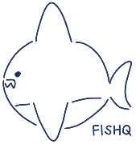

ข้อใดเป็นสาเหตุที่ทำให้ในปี พ.ศ.2561 จับปลาฉลามได้ลดลงจากปี พ.ศ.2541 (มีคำตอบที่ถูกต้องมี 2 คำตอบ)
เริ่มมีการลากอวนเชิงพาณิชย์ในปี พ.ศ.2503
คนนิยมบริโภคอาหารประเภทหูฉลามลดลง
ปลาฉลามเจริญเติบโตเต็มทำให้สามารถหลบหนีจากการโดนจับ
ปลาฉลามมีจำนวนลดลงจนใกล้สูญพันธุ์ สาเหตุหลักมาจากการทำประมงที่มากเกินไป
ปลาฉลามได้รับการคุ้มครองตามกฎหมายภายใต้พระราชบัญญัติสงวนและคุ้มครองสัตว์ป่า
ส่งคำตอบ
ย้อนกลับ
กลับสู่หน้าแรก

Clear local storage